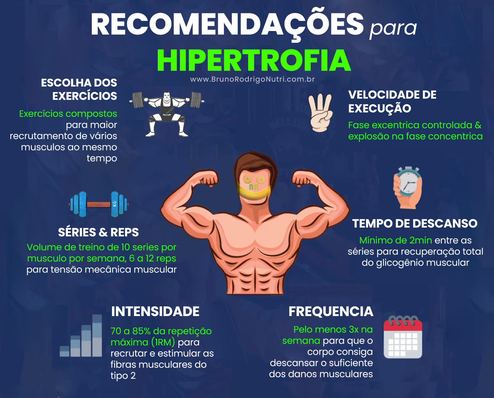

Amplitude é Lei
Treinar com a amplitude máxima alonga a fibra muscular sob tensão, gerando mais microlesões positivas. Colocar muito peso e fazer um movimento "curto" apenas infla o ego e prejudica os seus resultados reais.

Treinar com a amplitude máxima alonga a fibra muscular sob tensão, gerando mais microlesões positivas. Colocar muito peso e fazer um movimento "curto" apenas infla o ego e prejudica os seus resultados reais.
O peso importa, mas só quando você domina a técnica. Aumentar a carga progressivamente mantém o músculo em constante desafio adaptativo, forçando o corpo a construir nova massa muscular para aguentar o esforço.
Não basta mover o peso do ponto A ao ponto B. Concentrar-se no músculo que está trabalhando e controlar a descida (fase excêntrica) ativa muito mais unidades motoras do que fazer o exercício com pressa.